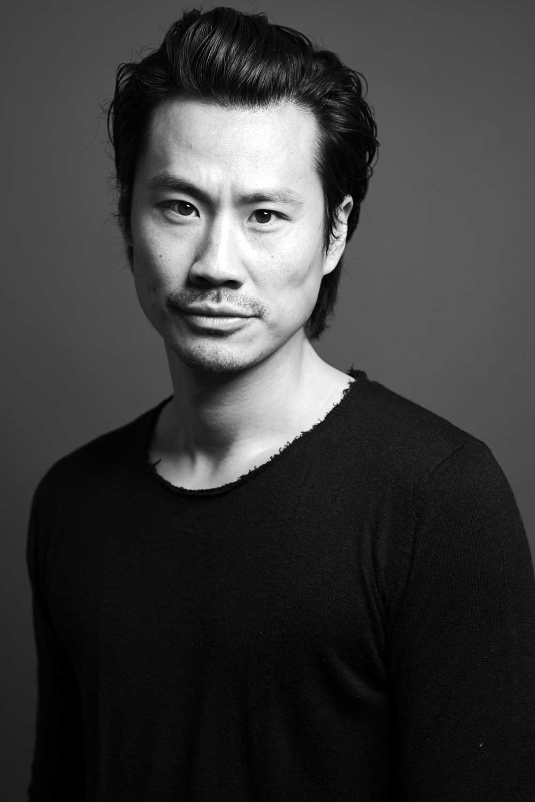
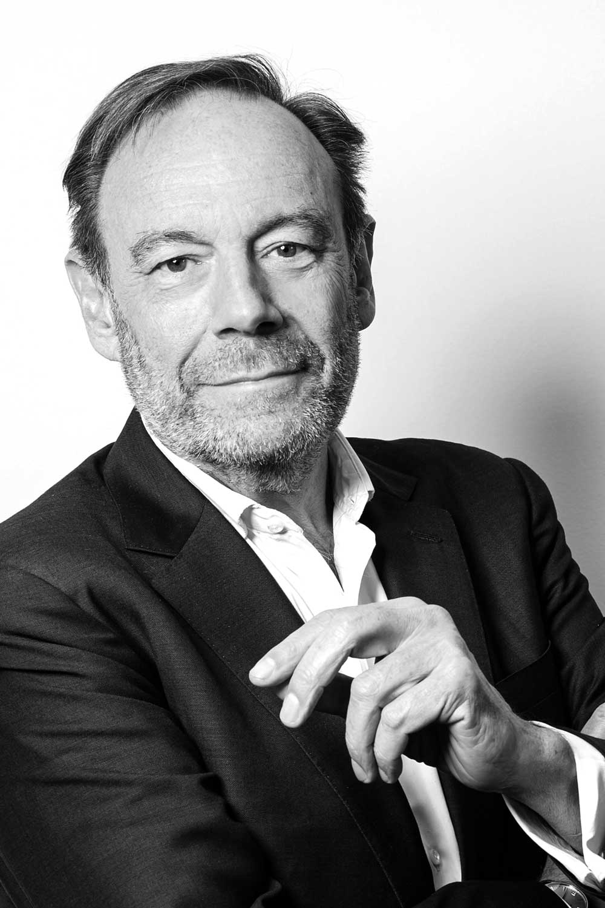
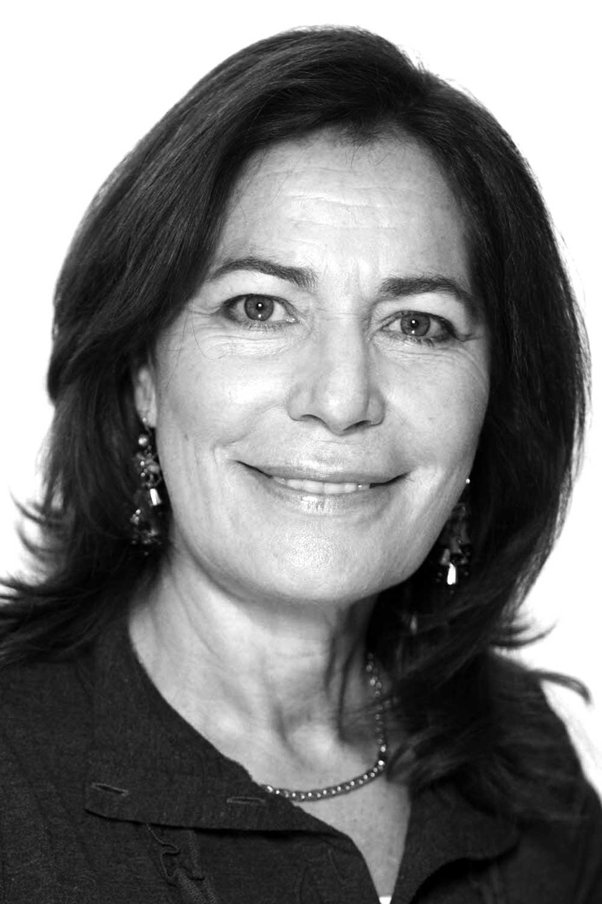
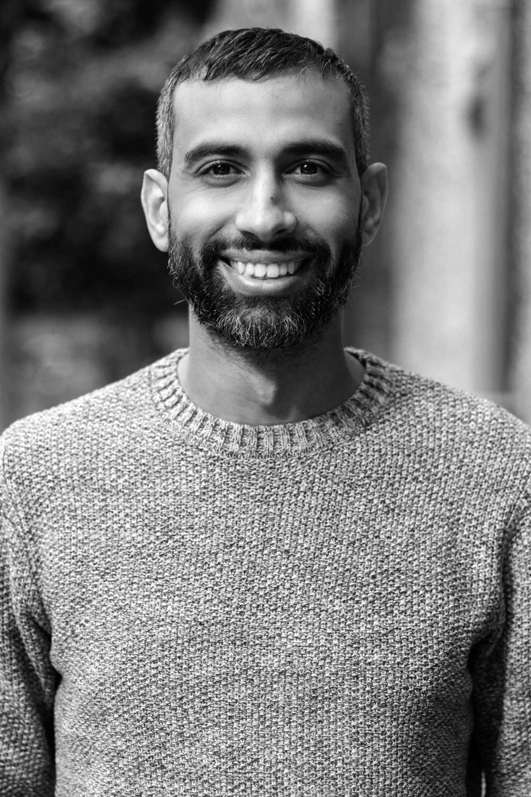
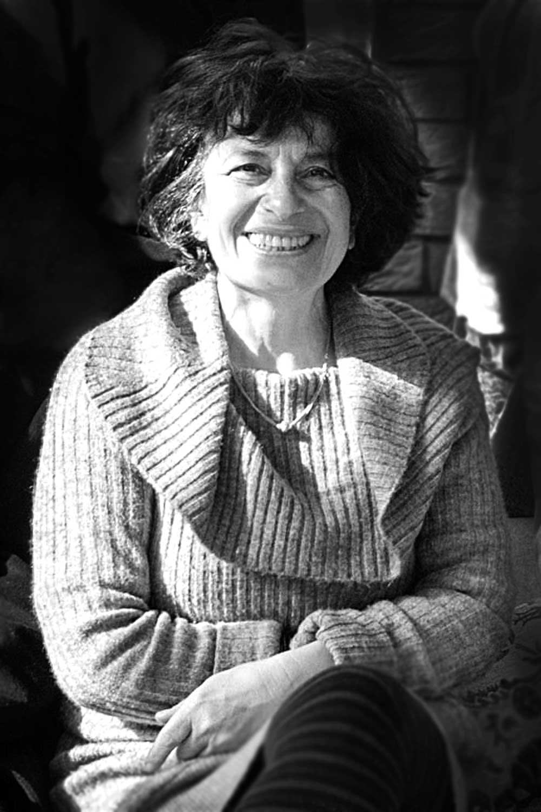

Qui sommes-nous ?
La Cité européenne des scénaristes est une association d’intérêt général portée par des hommes et des femmes, professionnels du cinéma et de l’audiovisuel, et plus généralement, du secteur culturel.
Ils ont décidé d’unir leur force pour promouvoir une vision du secteur et notamment du métier de scénariste fondée sur la coopération et la transparence.
Le Conseil d’administration



Frédéric Chau
Comédien / Scénariste

Xavier Couture
Producteur

Mémona Hintermann-Afféjee
Journaliste, membre du CSA 2013-2019

Hamid Hlioua
Scénariste

Arielle Pannetier
Experte formation
L'équipe


Conseil pédagogique
Le Conseil pédagogique du Centre de compagnonnage de la Cité est
un organe consultatif qui a pour mission de garantir un parcours
professionnalisant en adéquation avec les réalités du métier et
les besoins du secteur. Il est constitué de scénaristes
représentatifs des différentes pratiques d’écriture audiovisuelle
et cinématographique, de producteurs et d’experts du secteur et/ou
de la formation.
Comité de pilotage
Le Comité de pilotage est un organe de suivi et d’appui
opérationnel dans le cadre de l’expérimentation du Centre de
compagnonnage. Il est composé de représentants de nos partenaires,
de professionnels du secteur, des co-présidents de la Cité et du
responsable du Centre de compagnonnage.